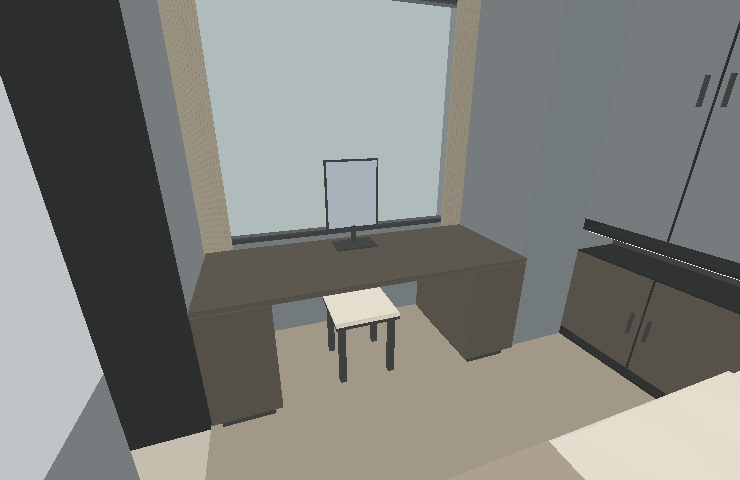
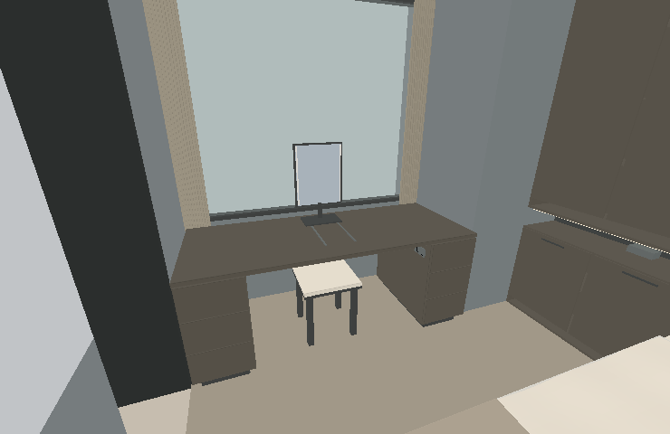
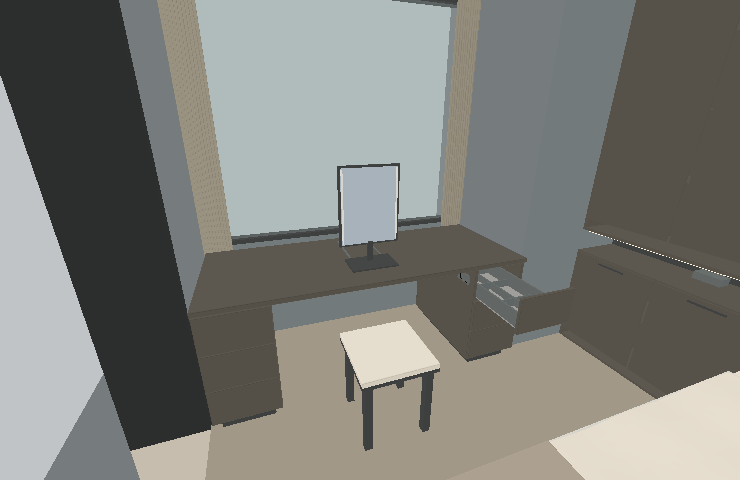
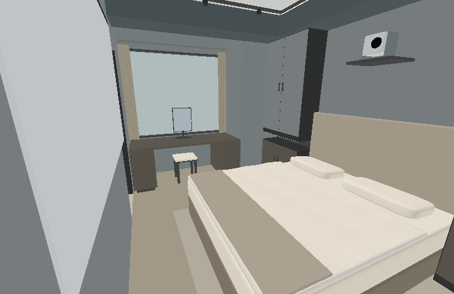
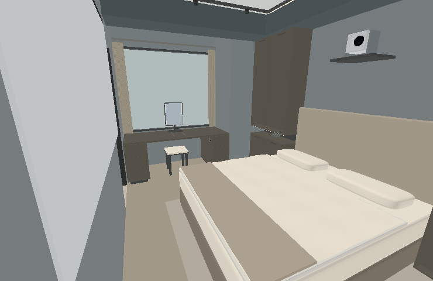
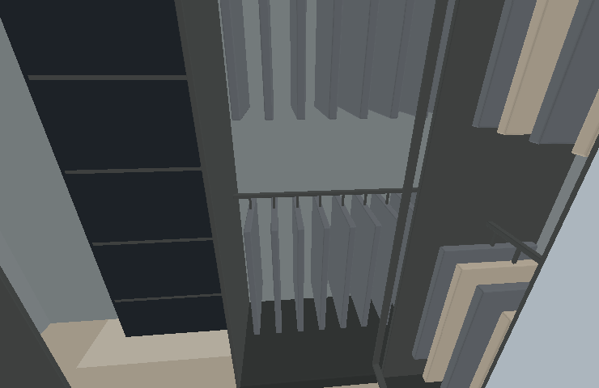
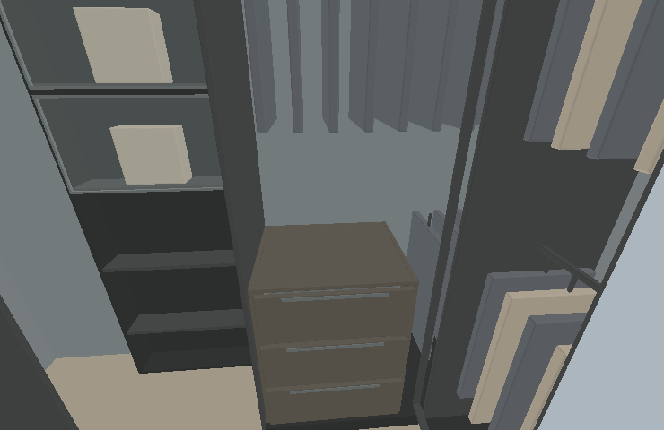
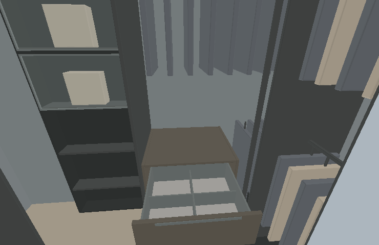

2026-09-11 · V1～V4 共用調整把主臥做成能使用的空間
化妝、穿衣、閱讀與睡前照明加入實際操作；全屋固定家具按原圖及後續已確認版本核對。四版格局差異保留。
下方為實際模型的同角度離線幾何與底色圖，非AI想像圖。這組圖片不含GPU木紋、鏡面反射及真實光照；燈光功能請在3D內操作。
化妝台：鏡子、抽屜與側邊插座

調整前
調整後
使用狀態：椅凳與抽屜拉出。床側縮至55cm，使用完成請收回。主臥：材質和橫向指拉一致

調整前
調整後更衣室：轉角前的分隔抽屜

調整前
調整後
抽屜展開35cm；南側原衣櫃與滑鏡軌道保留。後續更新：依業主指示，儲藏室已改為可調式層架，原暫置矮櫃移除。查看可調層架配置；以下為本次全屋核對當時的紀錄。
使用時的空間
原圖與後續方案逐區核對
驗證範圍
四版保留13個導覽位置和24個設備實例。相對前一版，幾何差異限於主臥、更衣室與儲藏拉門區；家具平移每項檢查11個位置，未與固定物件相交。儲藏室關門阻擋、開門通行及步行者避讓均測試。
五種情境、窗簾聯動、按鈕狀態、四版頁面切換及靜止停止送出繪圖的程式行為已驗證。未在瀏覽器實測GPU幀率、噪音、反射或照度，也不取代現場放樣。
檢查數據 · Omni PRO原廠角度資料 · 主冰箱原廠